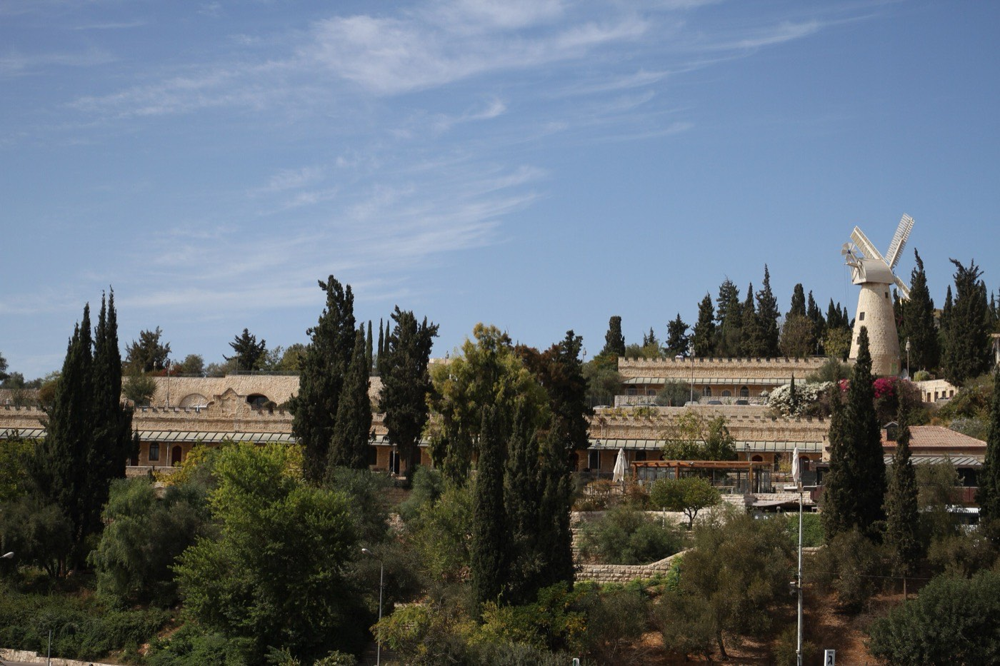
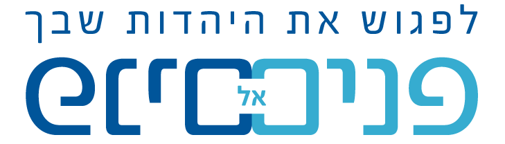
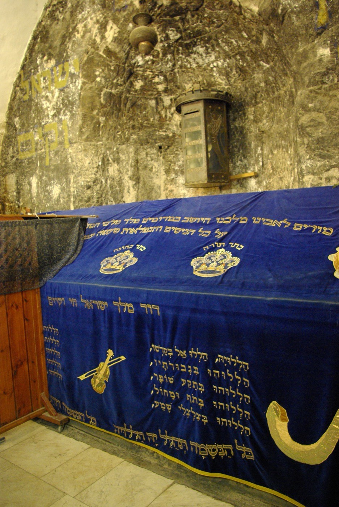
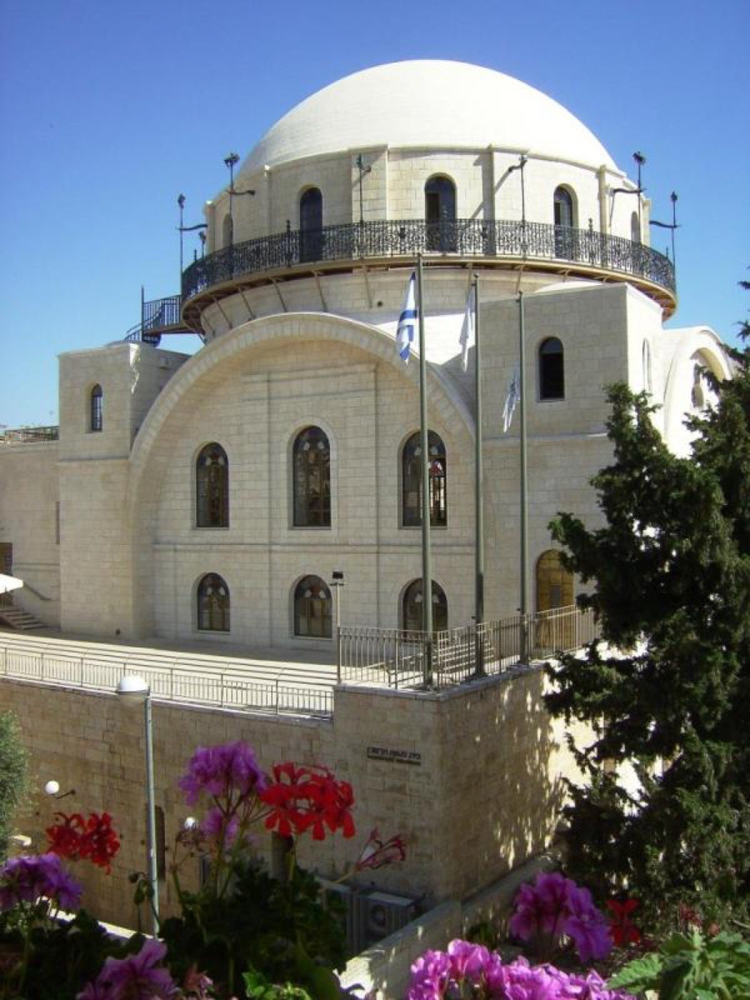
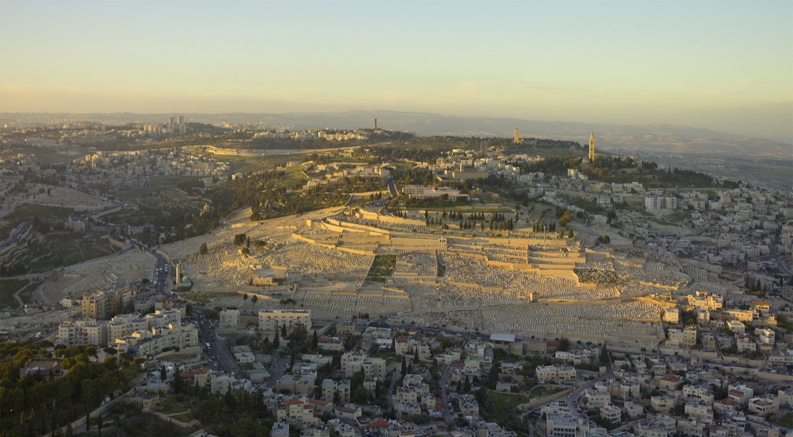

מסלול 1
יציאה מעצמי בדרך לירושלים
ממשכנות שאננים לכותל — דרך הסיפור של היציאה מהחומות ומסירות הנפש, במבט של גאולת ירושלים. עלייה דרך מנהרת הר ציון ופגישה עם שמותיה של ירושלים, הרובע והכותל.

הזמנה לישיבות · אולפנות · תנועות נוער · צוותים
לחוות את ירושלים כמו שלא חוויתם.
השעה מאוחרת. האבנים עוד חמות מחום היום, והסמטאות שקטות. קבוצה צועדת לאט בין החנויות הסגורות — ואור פנס בודד נופל על אבן בת אלפיים שנה.
המדריך — תלמיד חכם — עוצר. ומספר.
ופתאום הסמטה קמה לתחייה: כאן עלו לרגל, כאן התפללו דורות, כאן ההיסטוריה פוגשת את האמונה. בין ירושלים של מטה לירושלים של מעלה — משהו נפתח בלב.
וכשמגיעים אל הסליחות —
כבר לא אומרים אותן מבחוץ.
אומרים אותן מבפנים.
ירושמימה, מבית פנים אל פנים, מזמינה אתכם לסיורי הכנה לסליחות המועברים ע״י תלמידי חכמים — שמפגישים את האנשים עם האבנים והתקופות שעברו בירושלים, בחיבור למסרים עמוקים, בצורה המחברת אל הלב.
🕯️ ניתן לסיים את הסיור באמירת סליחות בכותל
ממשכנות שאננים לכותל — דרך הסיפור של היציאה מהחומות ומסירות הנפש, במבט של גאולת ירושלים. עלייה דרך מנהרת הר ציון ופגישה עם שמותיה של ירושלים, הרובע והכותל.

קבר דוד, ופגישה עם דמותו של דוד המלך — מלכות וגאולה, עוז וענווה. הר ציון, היחס בין ציון וירושלים, הרובע והכותל.

שעושה את כל ישראל חברים — עיר התורה והחסד. משער ציון, שחרור העיר, כיכר בתי מחסה, החסד של הישוב בירושלים, ישיבת המקובלים (תורת הסוד והבאת הגאולה), וישיבת הכותל.

הר תחיית המתים, תצפית ההר, ומעבר בין קברי גדולי הדורות בירושלים — כתשקיף לסוד הפנימי של הכיסופים לעיר. קבר זכריה, סיפור החורבן והבניין, אור החיים הקדוש, הרש״ש וסיפור הכיסופים לירושלים ולגאולה. אופציה לסיים בביקור בכותל.
משך 3 המסלולים הראשונים: שעה וחצי–שעתיים · משך מסלול הר הזיתים: שעתיים וחצי
עומק תורני אמיתי — לא עוד סיור, אלא מסע עם אנשים שחיים את התוכן.
לעולם המושגים של עולם התורה והחינוך הדתי — מדברים בשפה שלכם.
סיור גם בלב הלילה, כשירושלים שקטה והלב פתוח.
אפשר להמשיך את החוויה באירוח בבתים ובשיחה שנוגעת.
הסיורים מוכרים בתכנית הגפן · קוד 48281 (אדמה ושמים)
בחרו מסלול ותאריך, ותנו לקבוצה שלכם חוויה שלא ישכחו — בין סמטאות ירושלים אל לב הסליחות.
שלחו הודעה לציון